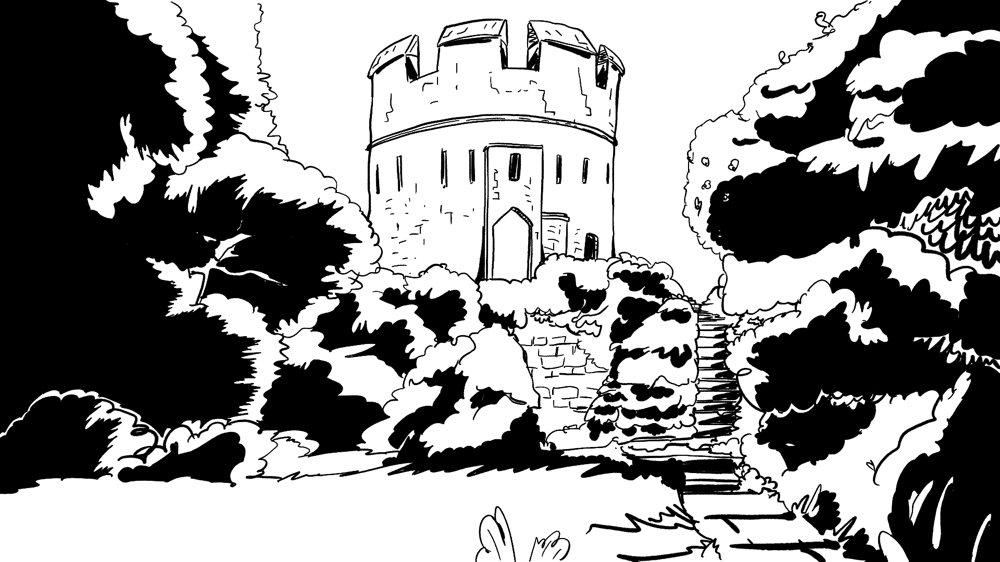
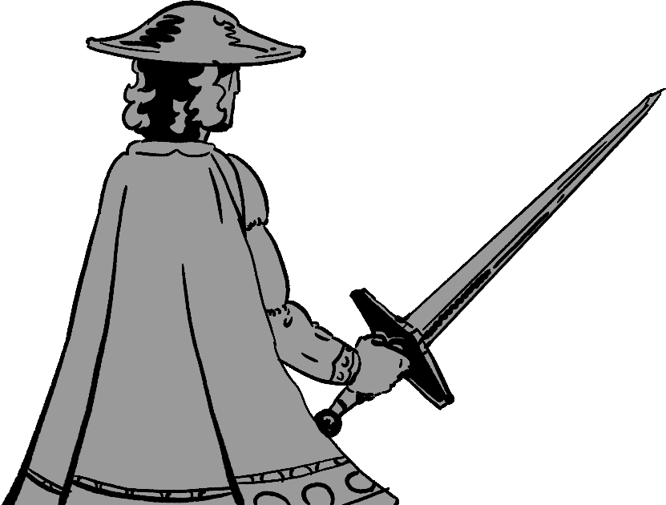

Bertilak's Games


First hunt.
At þe fyrst quethe of þe quest quaked þe wylde;
Der drof in þe dale, doted for drede,
Hi3ed to þe hy3e, bot heterly þay were
Restayed with þe stablye, þat stoutly ascryed;
Þay let þe hertte3 haf þe gate, with þe hy3e hedes,
Þe breme bukke3 also, with hor brode paume3;
For þe fre lorde hade de-fende in fermysoun tyme,
Þat þer schulde no mon mene1 to þe male dere.
Þe hinde3 were halden in, with hay & war,
Þe does dryuen with gret dyn to þe depe slade3;
Þer my3t mon se, as þay slypte, slentyng of arwes,
At vche [þat] wende vnder wande wapped a flone,
Þat bigly bote on þe broun, with ful brode hede3,
What! þay brayen, & bleden, bi bonkke3 þay de3en.
& ay rachches in a res radly hem fol3es,
Huntere3 wyth hy3e horne hasted hem after,
Wyth such a crakkande kry, as klyffes haden brusten;
What wylde so at-waped wy3es þat schotten,
Wat3 al to-raced & rent, at þe resayt.
Bi þay were tened at þe hy3e, & taysed to þe wattre3,
Þe lede3 were so lerned at þe lo3e trysteres,
& þe gre-hounde3 so grete, þat geten hem bylyue,
& hem to fylched, as fast as freke3 my3t loke,
þer ry3t.
Þe lorde for blys abloy
Ful oft con launce & ly3t,
& drof þat day wyth Ioy
Thus to þe derk ny3t.
Second hunt.
Til þe kny3t com hym-self, kachande his blonk,
Sy3 hym byde at þe bay, his burne3 bysyde,
He ly3tes luflych1 adoun, leue3 his corsour,
Brayde3 out a bry3t bront, & bigly forth stryde3,
Founde3 fast þur3 þe forth, þer þe felle byde3,
Þe wylde wat3 war of þe wy3e with weppen in honde,
Hef hy3ly þe here, so hetterly he fnast,
Þat fele ferde for þe freke3,2 lest felle hym þe worre;
Þe swyn sette3 hym out on þe segge euen,
Þat þe burne & þe bor were boþe vpon hepe3,
In þe wy3t-est of þe water, þe worre hade þat oþer;
For þe mon merkke3 hym wel, as þay mette fyrst,
Set sadly þe scharp in þe slot euen,
it hym vp to þe hult, þat þe hert schyndered,
& he 3arrande hym 3elde, & 3edoun3 þe water,
ful tyt;
A hundreth hounde3 hym hent,
Þat bremely con hym bite,
Burne3 him bro3t to bent,
& dogge3 to dethe endite.
Third hunt.
Now hym lenge in þat lee, þer luf hym bi-tyde;
3et is þe lorde on þe launde, ledande his gomnes,
He hat3 forfaren þis fox, þat he fol3ed longe;
As he sprent ouer a spenné, to spye þe schrewe,
Þer as he herd þe howndes, þat hasted hym swyþe,
Renaud com richchande þur3 a ro3e greue,
& alle þe rabel in a res, ry3t at his hele3.
Þe wy3e wat3 war of þe wylde, & warly abides,
& brayde3 out þe bry3t bronde, & at þe best caste3;
& he schunt for þe scharp, & schulde haf arered,
A rach rapes hym to, ry3t er he my3t,
& ry3t bifore þe hors fete þay fel on hym alle,
& woried me þis wyly wyth a wroth noyse.
Þe lorde ly3te3 bilyue, & cache3 by1 sone,
Rased hym ful radly out of þe rach mouþes,
Halde3 he3e ouer his hede, halowe3 faste,
& þer bayen hym mony bray2 hounde3;
Huntes hy3ed hem þeder, with horne3 ful mony,
Ay re-chatande ary3t til þay þe renk se3en;
Bi þat wat3 comen his compeyny noble,
Alle þat euer ber bugle blowed at ones,
& alle þise oþer halowed, þat hade no hornes,
Hit wat3 þe myriest mute þat euer men herde,
Þe rich rurd þat þer wat3 raysed for renaude saule,
with lote;
Hor hounde3 þay þer rewarde,
Her3 hede3 þay fawne & frote,
& syþen þay tan reynarde,
& tyrnen of his cote.